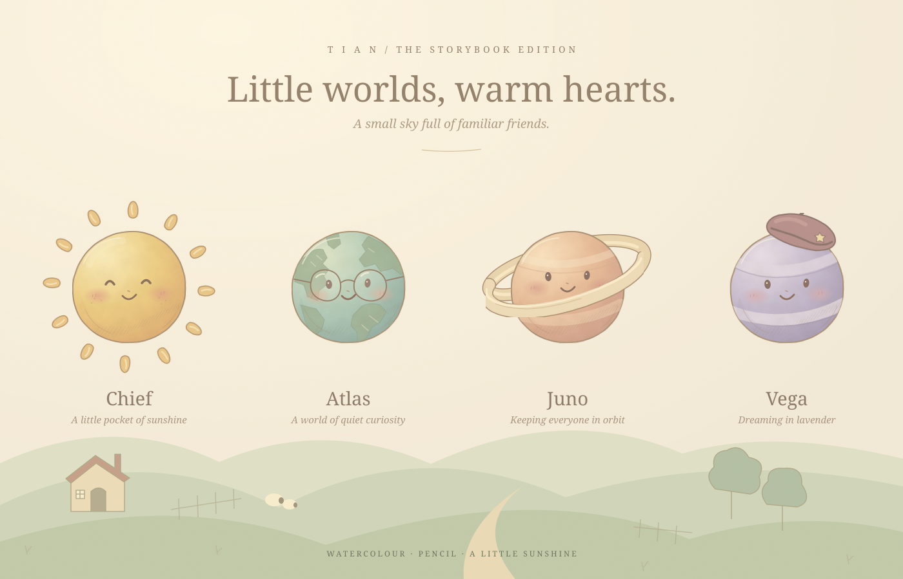
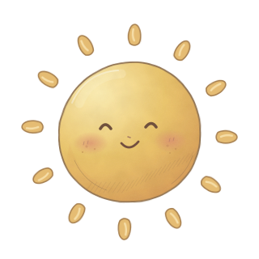
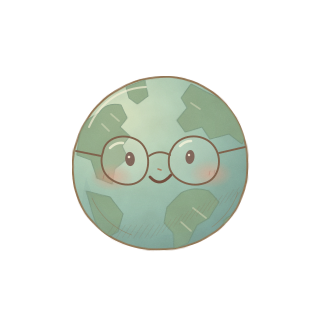
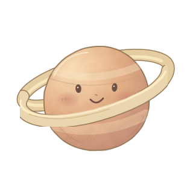
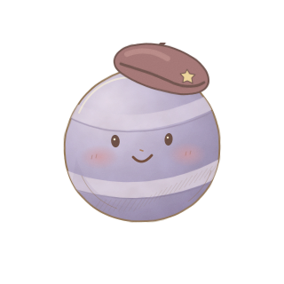

Four familiar little worlds
Individual SVGs · Transparent backgrounds · 320 × 320




A little company, at any size.

Individual SVGs · Transparent backgrounds · 320 × 320




A little company, at any size.